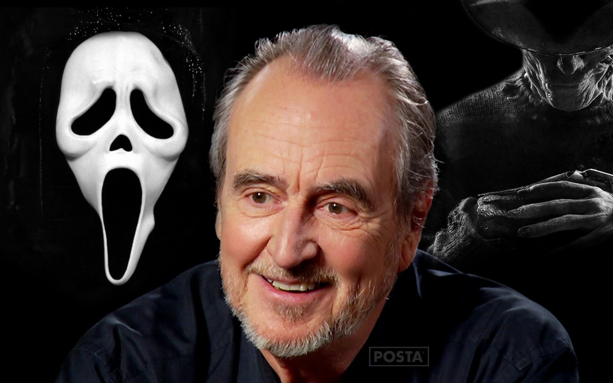

Wes Craven (1939 - 2015)
Wesley Earl Craven fue un guionista y director de cine estadounidense, conocido por ser el creador de numerosas películas de terror. Sus creaciones de mayor éxito fueron A Nightmare on Elm Street, incluyendo el personaje de Freddy Krueger, y la saga Scream. Otros destacados trabajos suyos son The Last House on the Left, The Hills Have Eyes y Amiga mortal. Y formando junto a David Cronenberg y John Carpenter una tríada esencial para entender el cine de terror actual, además es reconocido por plasmar del cómic al cine a La cosa del pantano en dos películas.
